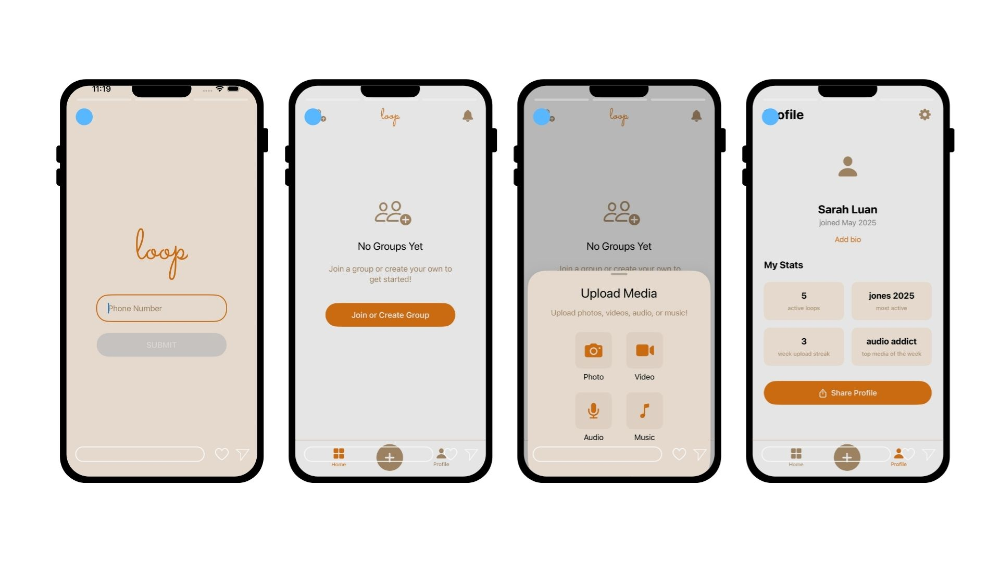
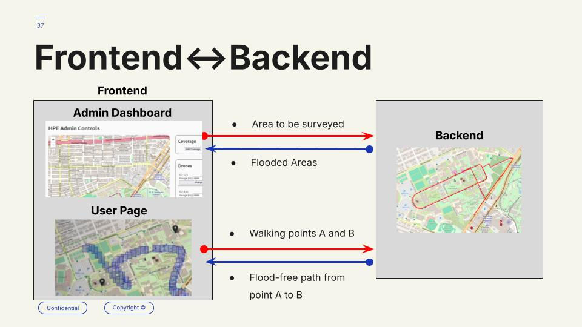

About
I'm a software engineer and recent graduate from Rice University, where I studied Computer Science with a minor in Data Science.
Currently based in San Francisco, CA. When I'm not coding, you'll find me playing basketball, making music, or exploring new technologies. Reach me at a.ondara14@gmail.com.
Projects

Add screenshot: images/portfolio/loop-ios.jpgSwiftUI frontend for Loop, a multimedia sharing platform iOS app designed to help you stay connected with family and friends. Built with modern iOS development practices and a focus on user experience and seamless communication.
A Slack app that allows users to change music in the office. Utilizes Python scripting and connects to the Spotify API to provide seamless music control directly from Slack.
Audio watermarking system with cryptographic key pairs and external artist verification. Prevents AI band impersonation using RSA 2048-bit encryption, digital signatures, and verification through Spotify, YouTube, and social media platforms. Features a React frontend and FastAPI backend with real-time watermark embedding and verification.

Add screenshot: images/portfolio/flood-detection.jpgDeveloped a multi-drone system for mapping flood-affected areas during heavy rainfall for real-time flood monitoring. Created a PyBullet simulation, integrating a nearest-neighbor model to detect flood regions across various terrains. Designed an API to transmit coordinates of flooded areas to the frontend and display them on OpenStreetMaps.